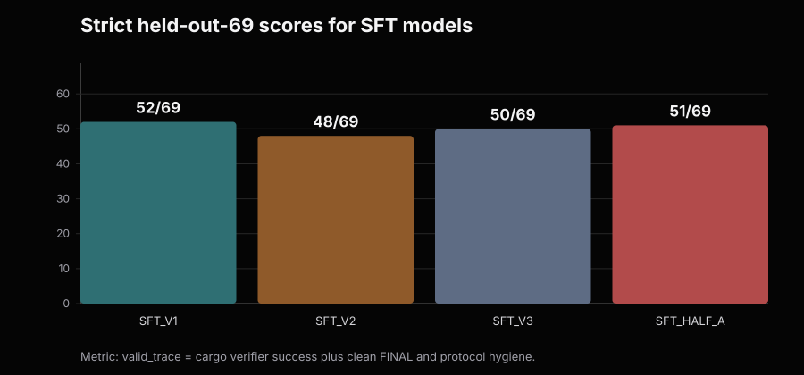
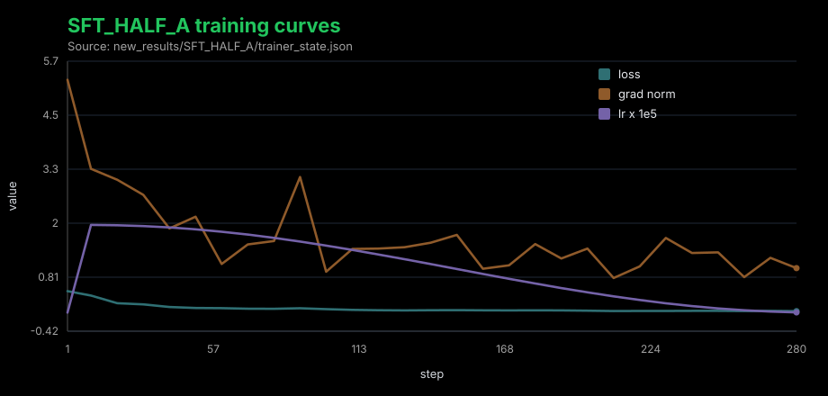
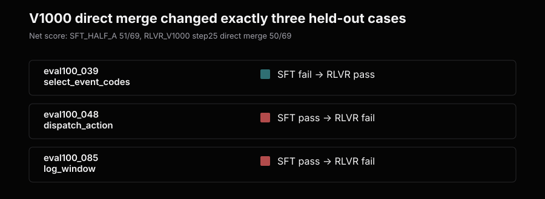
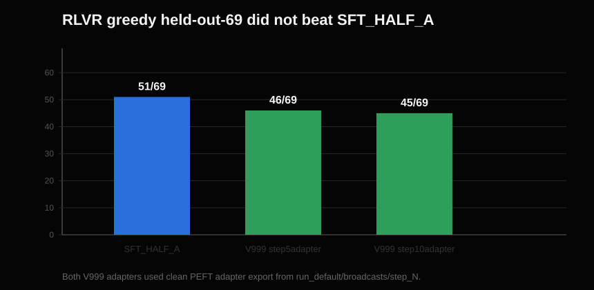
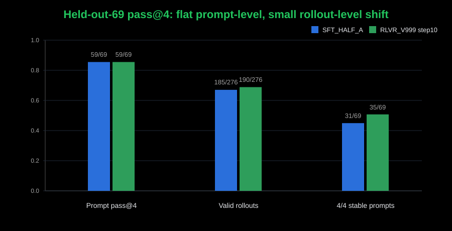

SFT Worked. RLVR Moved the Distribution, But Did Not Win.
This is where I am ending this round of Glyph.
Code: https://github.com/JayZenith/glyph
Glyph is a Rust tool-use agent. The model emits CALL tool(...) blocks, tools execute against real Rust crates, and then the model should stop with a clean FINAL.
I built Glyph as an end-to-end Rust tool-use agent experiment stack around PRIME-RL: synthetic task generation, SFT trace construction, held-out evals, the real Rust tool harness, RLVR task integration, reward validation, checkpoint export, and final pass@k measurement.
I used Claude Code and Codex heavily as coding assistants during implementation and debugging, but the system design, experimental decisions, eval criteria, data generation, RLVR setup, analysis, and final conclusions are mine.
The contract is not just "make cargo pass." The contract is the whole trace:
CALL read_file(...)
RESULT ...
CALL apply_patch(...)
RESULT ...
CALL cargo_test(...) or CALL cargo_run(...)
RESULT status: success
FINAL: ...
That is the core lesson:
Verifier RL only works if the verifier matches the full behavior you actually want.
Otherwise, cargo can pass while the agent trace is still unusable.
The result is not the RLVR win I wanted. SFT built the agent. RLVR changed the sampled distribution, but did not improve the held-out eval reliability on unseen Rust crates.
Each prompt gives the model a crate path and a real tool-use task: patch code until cargo_test passes, patch code until cargo_run prints exact expected stdout, or simply run an already-correct crate and report the result. The held-out eval mix is:
16 patch_test_pass
24 patch_test_recover
9 patch_run_pass
10 patch_run_recover
5 run_only
5 test_only
The Metric Had To Match the Agent Contract
Early scoring was too loose. A metric called terminal_tool_success could
credit a trace whose last successful tool was not a verifier. That is not a coding-agent success.
The metric that mattered became strict valid_trace:
valid_trace =
terminal cargo_test or cargo_run success
+ clean FINAL after that verifier success
+ exact CALL syntax
+ no role-marker leakage
+ no repetition or gibberish
+ no extra tool use after successful verification
If the model passes tests but keeps patching, emits malformed calls, leaks role markers, or never finalizes, it is not a usable tool-use agent.
SFT Was the Main Result
The first strong SFT model, SFT_V1, scored:
SFT_V1 strict held-out-69: 52/69
That was the real first artifact: a 4B base model learned the CALL/RESULT/FINAL protocol well enough to edit Rust projects, run cargo verifiers, and solve most of the held-out set.
Then I tried deeper SFT data. SFT_V2 added variable-depth recovery. SFT_V3
added deeper recovery plus oversampled clean PASS -> FINAL traces.
SFT_V1: 52/69
SFT_V2: 48/69
SFT_V3: 50/69
The broad held-out score did not improve. But on the original 17 held-out
problems that SFT_V1 failed:
SFT_V1: 0/17
SFT_V2: 4/17
SFT_V3: 5/17
That was the first tradeoff. Deeper recovery data added hard-tail capability, but disturbed broad reliability. More difficult traces were not automatically better. They shifted the policy.
The Clean Split
That tradeoff is why SFT_HALF_A exists. At this point, I stopped trying to
RLVR whichever old SFT checkpoint looked best. To make the experiment clean, I
split synthetic_data/signal_v3.jsonl which was used to train SFT_V3 into two deterministic halves.
The SFT and RLVR pool came from this synthetic trace dataset; the held-out eval remained separate unseen Rust crates.
SFT_HALF_A: 1,042 rows, 762 unique case_ids
RL_POOL_B: 1,041 rows, 760 unique case_ids
The split was grouped by case_id, so oversampled traces for one case could not land on both sides.
Leakage checks:
case_id overlap: 0
trace overlap: 0
SFT_HALF_A trained only on half A and scored:
SFT_HALF_A strict held-out-69 (greedy pass@1 using strict valid_trace): 51/69

The clean SFT_HALF_A run looked normal:

That became the baseline. RLVR needed to beat 51/69 on the same strict
held-out eval using non-overlapping pool B.
Debugging the RLVR Harness
Several RLVR attempts failed before the final clean readout. I initially read the full-finetune regression as destructive RL, but I no longer think that is a clean conclusion. Those runs still had SFT/RLVR alignment problems: the reward, chat/tool rendering, and export path were not yet enforcing the exact same contract as the SFT data and held-out eval. Later LoRA runs were worth debugging, but the first scary regressions were not all model failures. They were harness failures.
The same lesson showed up three ways:
RL reward must match held-out success.
RL rendering must match the SFT/eval tool protocol.
RL checkpoint export must match the policy actually served during training.
Reward first: cargo passing somewhere in the trace is not enough. The highest reward had to require held-out-style success: terminal verifier pass, exact CALL syntax, clean final, no role leakage, no repetition, and no tool use after success.
Protocol next: the model was trained on literal ChatML-style tool turns:
<|im_start|>assistant
CALL ...
<|im_end|>
<|im_start|>tool
RESULT ...
<|im_end|>
Any deviation is not formatting trivia. It changes the learned task.
Export was the nastiest one. Two checkpoints appeared to collapse to 0/69,
but the traces were not random. They had one extra parenthesis:
CALL read_file(id="c1", file_path="..."))
Strict eval rejected every malformed call, no tools ran, and the score went to
zero. That looked like RL destroyed the model. It had not. The bad repos came
from non-canonical full-weight exports. The served RL policy was base model plus
the broadcast LoRA adapter; weights/step_N was not the clean served policy.
The official path became:
outputs/<RUN>/run_default/broadcasts/step_N/
exported as a PEFT adapter and evaluated as:
python -m sft.eval_formal \
--sft-model JayZenith/SFT_HALF_A \
--sft-adapter JayZenith/<RLVR_ADAPTER_REPO> \
...
Only after those fixes did the RLVR result become worth interpreting.
The First Clean RLVR Readout
The cleanest early case-level RLVR readout was RLVR_V1000 step 25, evaluated
through a direct local merge of the broadcast adapter:
SFT_HALF_A: 51/69
RLVR_V1000 step25 direct merge: 50/69
So it did not improve overall.
But it did solve one held-out problem that SFT_HALF_A failed:

This case matters because it is exactly the kind of recovery loop SFT still struggled with: repeated plausible patches, real verifier feedback, and a limited tool budget that runs out if the model does not reach a solution.
The eval case:
eval100_039_select_event_codes_partial_then_full_fix
kind: patch_test_recover
SFT_HALF_A got stuck in a repeated read -> patch -> test loop. It made 21
tool calls, never passed the tests, exhausted the budget, and emitted no clean
final.
RLVR_V1000 made a better fourth patch, got cargo_test passing at call c12,
and emitted a clean one-line FINAL.
That was a real held-out solve under the strict eval: the tools ran, cargo passed, and the trace ended with a clean FINAL. But the same checkpoint regressed two cases that SFT solved:
eval100_048_dispatch_action_match_branch_repair
eval100_085_log_window_filter_map_recover
The gain and losses looked like the same kind of effect: RLVR shifted fragile recovery paths. One previously failing case found a passing path, while two previously passing cases drifted into failing paths.
The honest claim was:
RLVR changed which recovery loops converge under greedy decoding,
while net aggregate reliability regressed by one: 51/69 -> 50/69.
The Final Clean RLVR Preserved Cargo Solving but Regressed Strict Greedy Validity
The final run had everything verified: a binary reward measured to emit exactly 0 or 10 (with 10 equal to strict held-out validity on every rollout checked), a chat template byte-identical to the SFT/eval trace format with a launch-time parity assertion, and the safe adapter export path. The adapter checkpoints still lost on greedy held-out eval:

SFT_HALF_A: 51/69
RLVR_V999 step 5: 46/69
RLVR_V999 step 10: 45/69
The Final pass@4 Check
The cheap decisive check was held-out-69 pass@4 with the final clean adapter
path: SFT_HALF_A versus SFT_HALF_A + RLVR_V999_STEP10, same prompts, same
tool budget, same temperature, real cargo execution, separate sandbox per
rollout.

The result:
SFT_HALF_A valid pass@4 prompts: 59/69
RLVR_V999_STEP10 valid pass@4 prompts: 59/69
SFT_HALF_A valid rollouts: 185/276
RLVR_V999_STEP10 valid rollouts: 190/276
SFT_HALF_A 4/4 stable prompts: 31/69
RLVR_V999_STEP10 4/4 stable prompts: 35/69
Prompt-level gains where SFT had zero valid samples and RLVR had at least one:
eval100_014_layered_config_env_does_not_override_explicit_file: 0/4 -> 2/4
eval100_035_record_line_parse_validate_recover: 0/4 -> 1/4
eval100_039_select_event_codes_partial_then_full_fix: 0/4 -> 1/4
Prompt-level losses:
eval100_037_weekly_region_summary_recover: 2/4 -> 0/4
eval100_097_department_expense_summary_report: 1/4 -> 0/4
eval100_099_filter_map_inventory_restock_report: 1/4 -> 0/4
The original V1000 signal case, eval100_039, shows up in that gains list at
1/4 -- a single-rollout flip, nothing more.
But the aggregate prompt-level result was flat. RLVR increased valid rollout count by five and made four more prompts stable at 4/4, while losing three prompt-level pass@4 cases. And the rollout-level shift does not clear the noise floor: at a ~68% success rate, one standard deviation on 276 rollouts is about 8, so +5 is statistically indistinguishable from zero. That is not a win. It is not even a claimable signal.
The one effect that did reproduce is negative. The two run_only losses
(eval100_097, eval100_099) kept cargo passing 4/4 while validity fell to
0/4: the policy drifted into copying multiline stdout into FINAL, failing
hygiene. The same five run_only cases failed greedy at both step 5 and step 10.
The mechanism is pool composition: run_only and test_only prompts are about 6%
of the RL pool, so almost no training groups exist where the reward can punish
that drift. Nothing in training defends behavior it never samples.
Decomposing the Loss: Solving vs Finalizing
Scoring the same greedy traces on cargo verifier success alone separates the two:
greedy cargo solved greedy valid_trace
SFT_HALF_A: 51/69 51/69
V999 step 5: 51/69 46/69
V999 step 10: 50/69 45/69
RLVR did not degrade Rust solving at all. The entire strict regression is final-answer hygiene, concentrated in the run_only drift above. Cargo-only pass@4 even ticked up (60/69 -> 62/69 prompts, 203 -> 205 rollouts), but that sits inside the same noise floor as everything else, so it is not claimable either.
This is not a reward-contract failure. The reward scored multiline-FINAL
successes exactly 0, verified across every rollout. It is a training-coverage
failure: the correct contract had almost no run_only groups to apply gradient
to, so unrelated drift in that region went undefended. The fix is data
balance, not reward design.
What I Think Happened
SFT gave the model a strong prior for the exact tool protocol and a decent greedy repair strategy.
RLVR shifted that policy enough to change recovery trajectories. Sometimes
that flipped a case in. Sometimes it flipped cases out. Under pass@4, the prompt
set stayed flat at 59/69, but the sampled rollout count moved slightly upward.
There is also a structural mismatch worth naming: training optimizes the temperature-0.8 sampling distribution, while the headline eval is greedy decode. A policy can genuinely shift its sampled distribution while its argmax path moves unpredictably, which is exactly what checkpoint-to-checkpoint churn in the greedy solved set looks like. On a 69-prompt greedy eval with a noise floor of roughly plus or minus three cases, a true RL effect of one or two cases is too small to separate from eval noise.
The model was not learning a broadly better repair policy. It was reshuffling near-boundary paths. The final measurement says:
RLVR produced case-level movement within the noise floor,
no held-out prompt-level improvement, and one reproducible
regression caused by training-pool kind imbalance.
Where This Ends
The final readout:
SFT is the main result.
Strict evals are non-negotiable.
Cargo pass@4 ticked up 60/69 -> 62/69, within noise.
But strict agent validity did not improve: strict pass@4 stayed 59/69,
and greedy strict held-out regressed 51/69 -> 45/69.
The gap came from final-answer hygiene drift, especially run_only cases.
Most apparent RL collapse was harness, reward, protocol, or export mismatch,
not the policy.
I wanted a simple RLVR result. The useful finding is sharper:
Verifier RL only works if the verifier matches the full behavior you actually want.
For tool-use agents, the contract is the whole trace, not just the verifier.